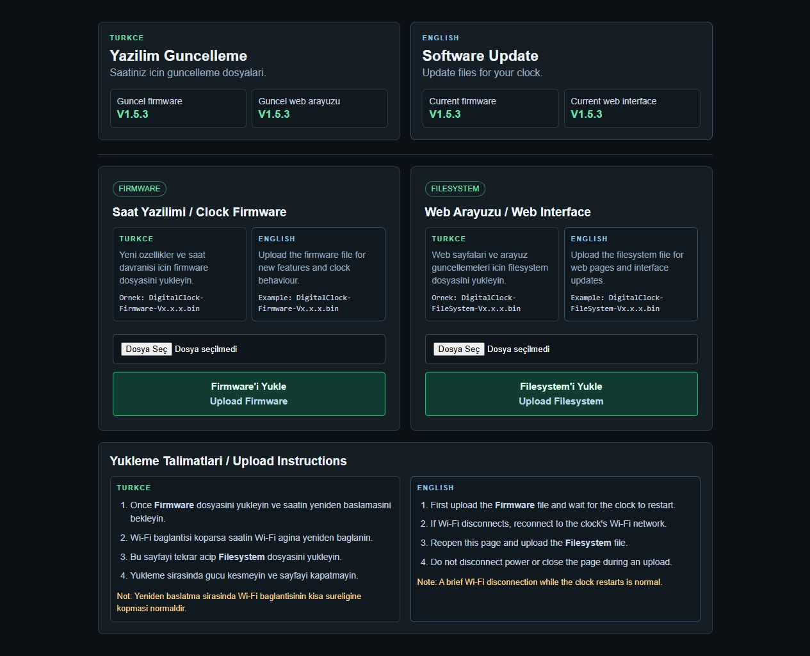

Yazılım Güncelleme Video Kılavuzu
Gerçek saat ekranlarıyla adım adım güncelleme.
Yükleme boyunca elektriği kesmeyin ve dosya aktarımı bitmeden tarayıcıyı kapatmayın.

Gerçek saat ekranlarıyla adım adım güncelleme.
Yükleme boyunca elektriği kesmeyin ve dosya aktarımı bitmeden tarayıcıyı kapatmayın.
